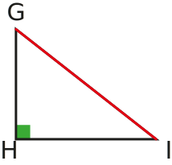

|
Chapitre 6
|
- Angles d'un triangle
|
Activité Introduction
-
Construire un triangle quelconque
-
Tracer la hauteur perpendiculaire a son plus grand côté.
-
Noté M le pied de la hauteur et marqué en couleur les angles du triangles.
-
Découper le triangle et plier les sommets vers le point marqué M.
-
Finir de rabattre les sommets pour obtenir un rectangle.
Que peut-on dire des angles du triangle ? Compléter la phrase suivante :
La somme des mesures des angles d'un triangle donne toujours ......°
Angles du triangles :
Propriété :
Dans un triangle, la somme de la mesure des angles est toujours égale à 180°.
Exemple :
$\textcolor{#EEBB00}{\widehat{ABC}}+\textcolor{#43a047}{\widehat{BCA}}+\textcolor{#7C4DA5}{\widehat{CAB}} = 180°$
Triangles particuliers :
Triangle isocèle :
Un triangle isocèle est un triangle qui a deux côtés de même longueur.
Exemple :

- Le triangle ABC ci-contre est isocèle en A.
- A est appelé sommet principal du triangle ABC.
- Le segment $[BC]$ est la base du triangle ABC.
Propriété :
Dans un triangle isocèle les angles à la base ont la même mesure.
Exemple :

$\widehat{ABC} = \widehat{BCA}$
Triangle équilatéral :
Un triangle équilatéral est un triangle qui a trois côtés de même longueur.

Le triangle DEF ci-contre est équilatéral.
Propriété :
Dans un triangle équilatéral tous les angles ont la même mesure, il mesure 60°.
Exemple :

$\widehat{DEF} = \widehat{EFD} = \widehat{FDE} = 60°$
Triangle rectangle :
Un triangle rectangle est un triangle qui a deux côtés perpendiculaires, donc un angle droit (90°).

Le triangle GHI est rectangle en H.
$\widehat{GHI} = 90°$